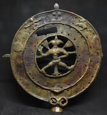
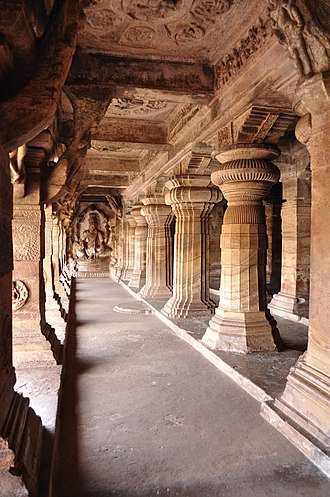
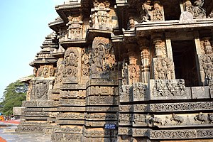
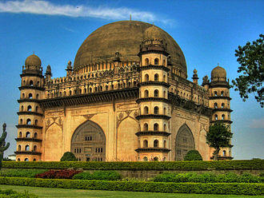
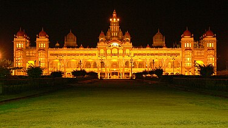

Karnataka has a long and varied history. The region was originally inhabited by hunter-gatherers but around 3000 BCE, the first farmers settled in the area. By 1000 BCE, iron-using settlers had arrived and by 500 BCE, there was a flourishing trade in gold and other metals.Around this time, the region was also home to the powerful kingdom of the Chalukyas.
>230 BCE – 1206 CE : They were followed by large imperial empires, the Badami Chalukyas, Rashtrakuta Dynasty and Western Chalukya Empire, who had their regal capitals in modern Karnataka region and patronized Kannada language and literature..
Main article: Rashtrakuta Empire
Main article: Western Chalukyas
Main article: Western Ganga Kingdom
Main article: Hoysala Empire
>1336–1565: In the early 14th century, the Vijayanagara Empire with its capital at Hosapattana (later to be called Vijayanagara) rose to successfully challenge the Muslim invasions into the South. This empire was established by Harihara I and Bukka Raya who many historians claim were commanders of the last Hoysala King Veera Ballala III and the empire prospered for over two centuries.
The Vijayanagara rulers patronized culture, and a distinct form of literature and architecture evolved during this period. The best example of Vijayanagara architecture is seen in the ruined city of Hampi
>1674–1818 : Most of Karnataka was conquered by the Maratha Empire in the 17th and 18th centuries. The first expeditions were led by Chhatrapati Shivaji. After Shivaji's death in 1680, his son Chhatrapati Sambhaji inherited the throne of the Marathas. He ruled until his capture, torture, and execution by the Mughal emperor Aurangzeb[57] in 1689. From this time until 1707, the war of 27 years was fought in the Deccan, including Karnataka. The Mughals raided the region several times but struggled in conquering the territory. The Maratha Empire continued to rule over the majority of Karnataka until the rise of Mysore in the 1760s and 1770s decades. Even after the Mysore-Maratha wars, the Marathas held onto the majority of Northern Karnataka until 1818.
>1947–present :
Jayachamaraja Wodeyar, the last ruling Maharaja of Mysore. After Indian independence, the Wodeyar Maharaja acceded to India. In 1950, Mysore became an Indian state, and the former Maharaja became its rajpramukh, or governor, until 1975. The Ekikarana movement which started in the later half of the 20th century, culminated in the States Reorganisation Act of 1956 which provided for parts of Coorg, Madras, Hyderabad, and Bombay states to be incorporated into the state of Mysore. Mysore state was renamed Karnataka in 1973. The state of Mysore was formed on 1 November 1956 and since then 1 November of every year is celebrated as Kannada Rajyotsava / Karnataka Rajyotsava.
